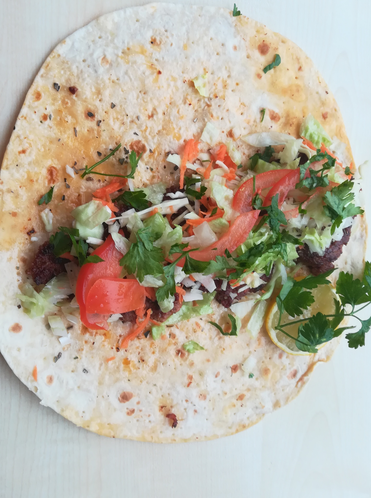
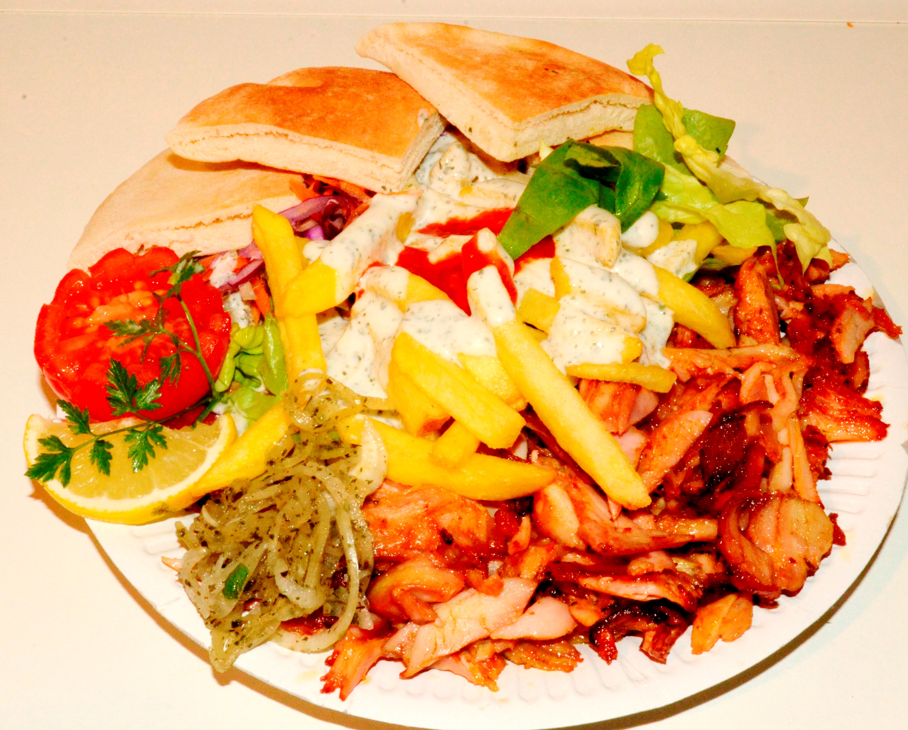

Kérjük, hogy az egyéni kedvezményekhez és a gyorsabb rendeléshez jelentkezzen be. Ha nincs fiókja regisztráljon.
| Kép | Név | Összetevők | Ár | Db | Rendelés |
|---|---|---|---|---|---|
|  | Döner | lavas, csirecomb sis, káposztás-répa, hagyma, saláta, paradicsom vagy csalamádé, joghurtos szósz, csípős szósz | 850 |
||
|  | Döner Tál | csirkehús, káposzta, répa, hagyma, saláta, paradicsom vagy csalamádé, joghurtos szósz, csípős szósz, sültkrumpli, pita | 1400 |
||
| Bárány Döner | darált bárányhús, répa, káposzta, hagyma, saláta, paradicsom vagy csalamádé, joghurtos szósz, csípős szósz, lavas | 890 |
×